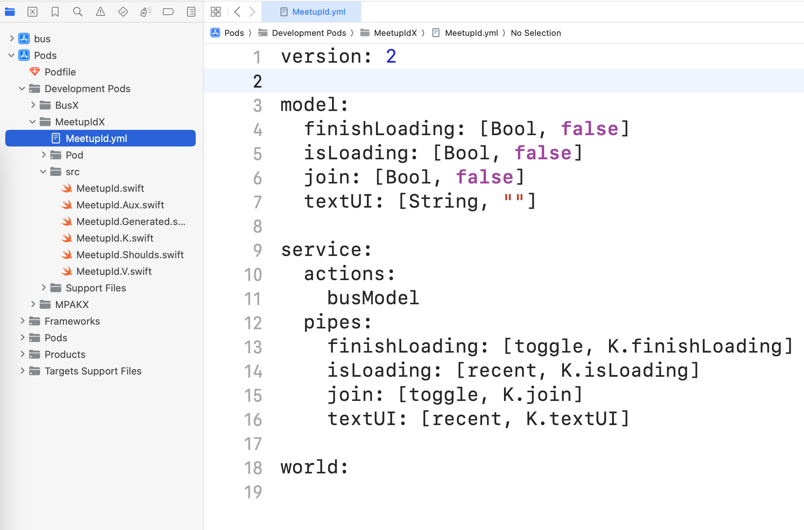
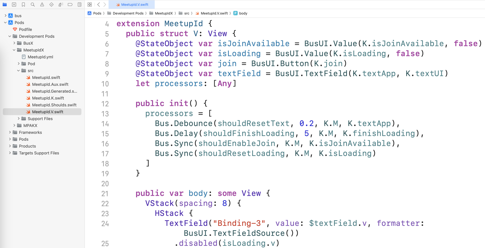

2024-01-04 00:00
Для достижения портируемости кода необходимо разделить весь код на две части:
Для упрощения конструирования портируемого кода нужна возможность размещать любой код - и повторяющийся, и уникальный - без учёта иерархии конечной платформы. Для этого лучше всего подходит шаблон проектирования «Шина». Шина все куски кода делает равными, т.к. они взаимодействуют друг с другом через Шину.
На текущий момент получился следующий результат:
Структура модуля:

Часть визуального представления:

Основная функциональность:
Это пример единственного экземпляра сущности.
Далее предстоит разобраться с множественными экземплярами сущности.